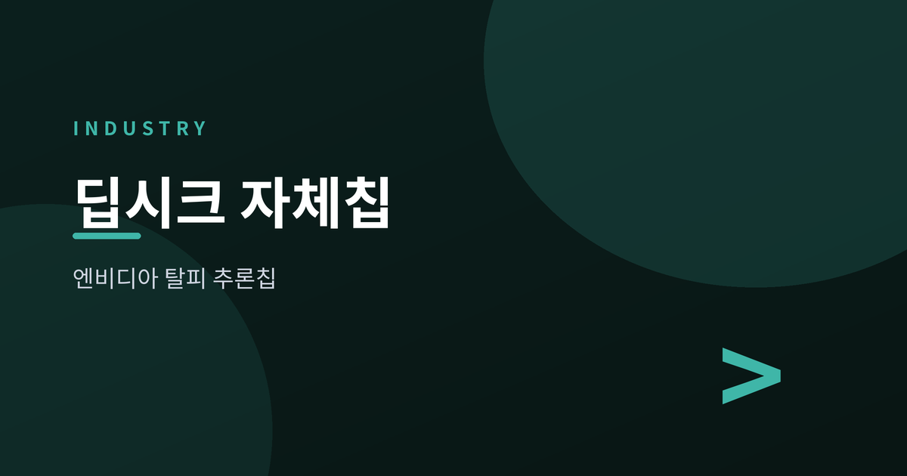
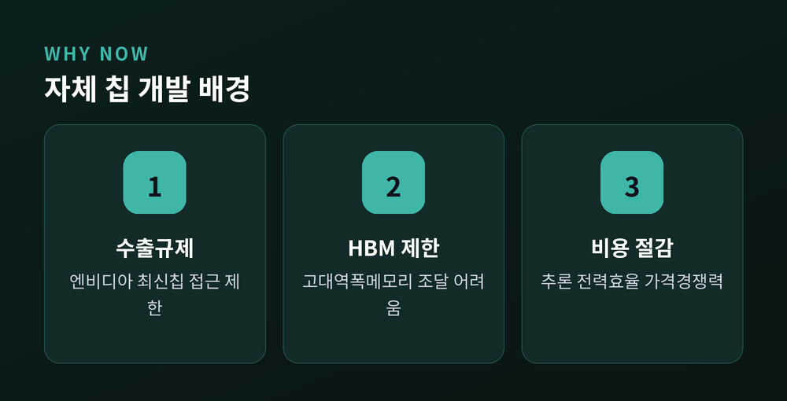
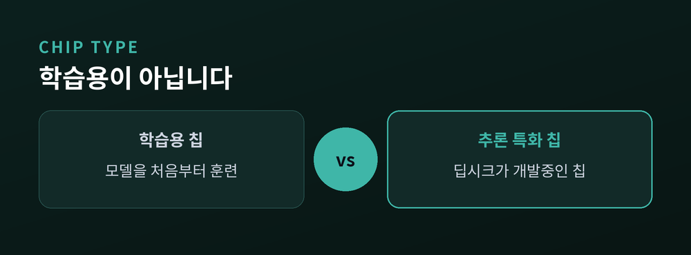
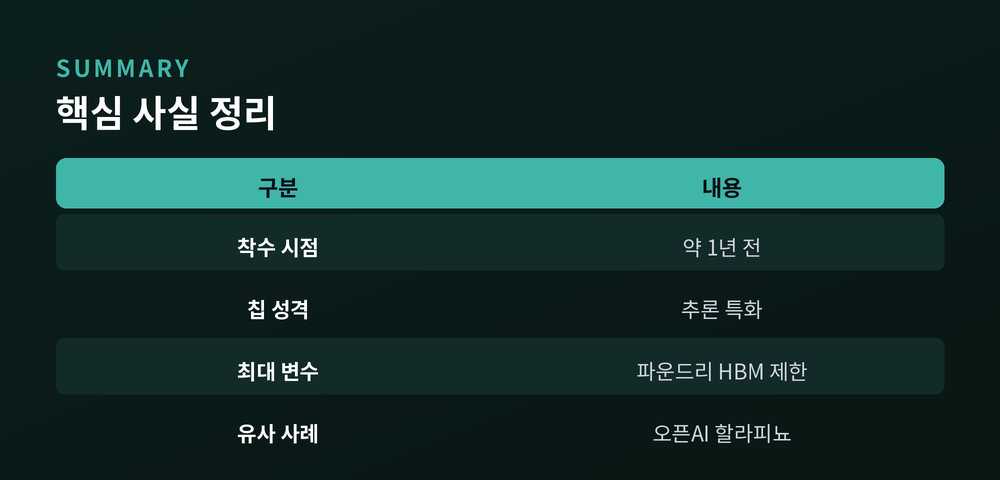

엔비디아 없는 추론 칩

2026년 7월 7일(현지시간) 로이터통신은 복수의 소식통을 인용해 중국 AI 스타트업 딥시크(DeepSeek)가 자체 AI 칩 개발에 나섰다고 보도했습니다. 국내 매체인 한국경제, 뉴스핌, 이데일리, 디지털데일리 등도 이를 인용해 일제히 전했습니다. 개발은 이미 약 1년 전부터 조용히 진행되어 온 것으로 알려졌으며, 딥시크는 반도체 설계·파운드리·메모리 기업들과 협의를 이어가는 한편 칩 설계 엔지니어 채용도 확대하고 있는 것으로 전해졌습니다.

"이번 칩은 모델을 학습시키는 용도가 아니라, 이용자 질의에 응답을 생성하는 추론 작업에 특화된 반도체다" — 로이터통신
핵심은 이 칩이 대규모 모델을 처음부터 훈련시키는 학습(training)용이 아니라는 점입니다. 이미 학습된 모델이 실제 서비스에서 사용자 질문에 답을 내놓는 추론(inference) 단계에만 특화 설계됐습니다. 추론은 AI 서비스 운영 비용의 상당 부분을 차지하는 영역으로, 전용 칩을 쓰면 범용 GPU보다 전력 효율과 처리 단가를 낮출 수 있다는 것이 업계의 판단입니다.

미국의 대중 반도체 수출 통제로 중국 기업은 엔비디아의 최신 고성능 칩에 접근할 수 없고, 최첨단 해외 파운드리 이용도 제한됩니다. 여기에 추론 칩의 핵심 부품인 고대역폭메모리(HBM) 조달까지 별도 규제로 어려움을 겪고 있어, 자체 칩 개발은 딥시크로서는 선택이 아닌 생존 전략에 가깝습니다. 중국 정부 역시 자국 기술기업의 반도체 자립을 지속적으로 독려하고 있는 상황입니다.
딥시크는 지난달 시리즈A 투자로 약 510억 위안(약 75억 달러) 규모를 조달했으며, 투자 후 기업가치는 약 4000억 위안에 달하는 것으로 전해졌습니다. 창업자 량원펑이 직접 약 200억 위안을 출자했고 텐센트, CATL 생태계, 징둥닷컴 등이 참여했습니다. 이번 자금은 인력 확충과 데이터센터 구축 등 '자산 투자형' 전략 전환에 쓰이고 있으며, 내몽골 지역에서 데이터센터 인력도 채용 중입니다.

칩 설계의 기술적 난도와 첨단 파운드리·HBM 접근 제한을 감안하면 딥시크의 자체 칩이 단기간에 상용화되기는 어려울 것이라는 관측이 우세합니다. 다만 AI 업계 전반에서 추론 전용 칩 확보 경쟁이 뚜렷해지고 있다는 점은 분명합니다. OpenAI는 브로드컴과 함께 첫 추론 칩 '할라피뇨(Jalapeno)'를 공개했고 앤트로픽도 자체 칩 개발을 검토 중인 것으로 알려져, 이번 소식은 개별 기업 이슈를 넘어 AI 인프라 경쟁이 하드웨어 내재화로 확장되는 흐름을 보여주는 사례로 해석됩니다.